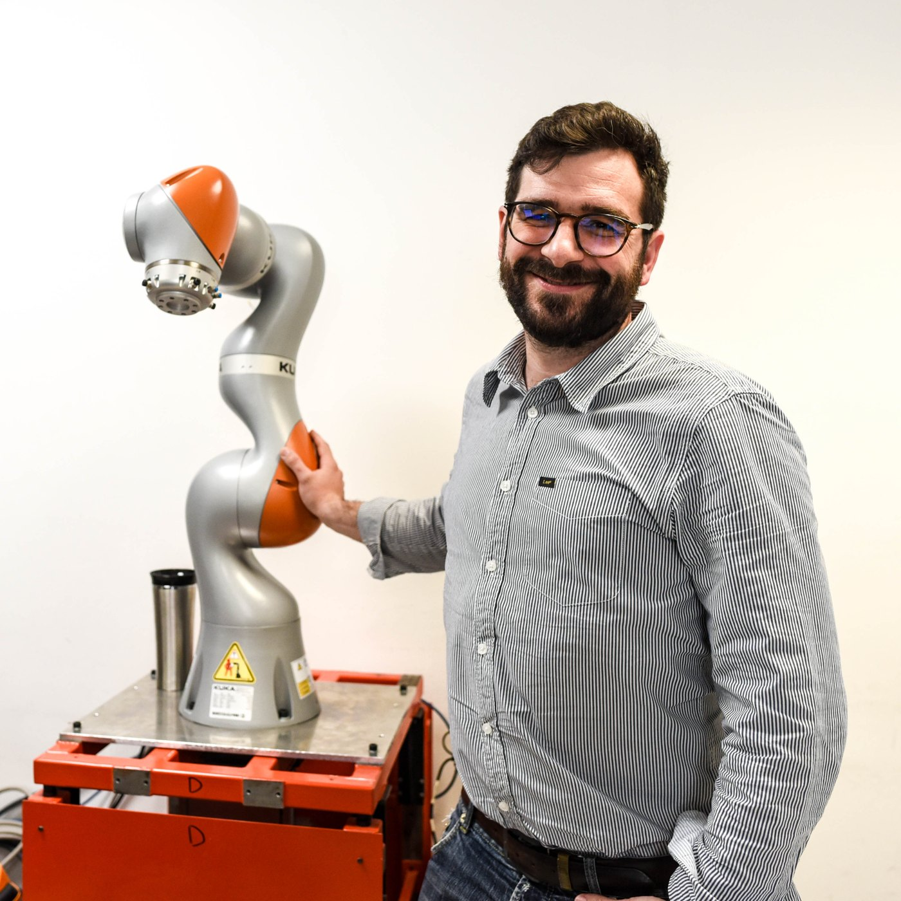

The work
His path included engineering degrees at the University of Pisa and a doctorate at Scuola Superiore Sant’Anna. The laboratory worked on technologies for gastrointestinal and cardiovascular applications. It also welcomed international researchers, including Whitaker fellow Levin Sliker in 2013.
The perspective
Ciuti’s interview connected sustained effort with the possibility of useful clinical impact. Pisa’s research community was part of that story: a setting where technical expertise and collaboration could support ideas that move between engineering and medicine.
“This motivates me to work hard every day.”
